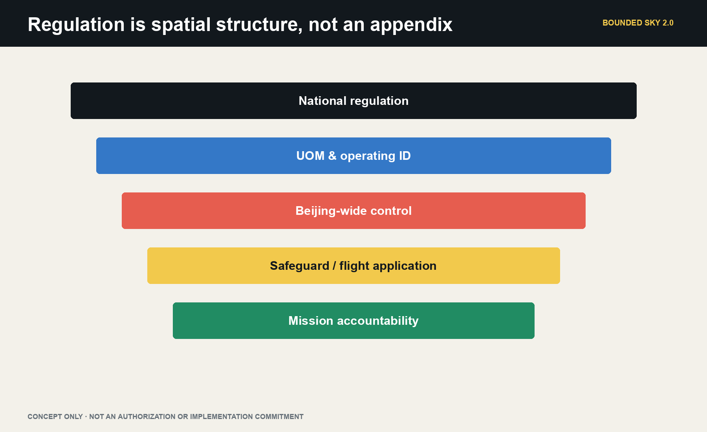
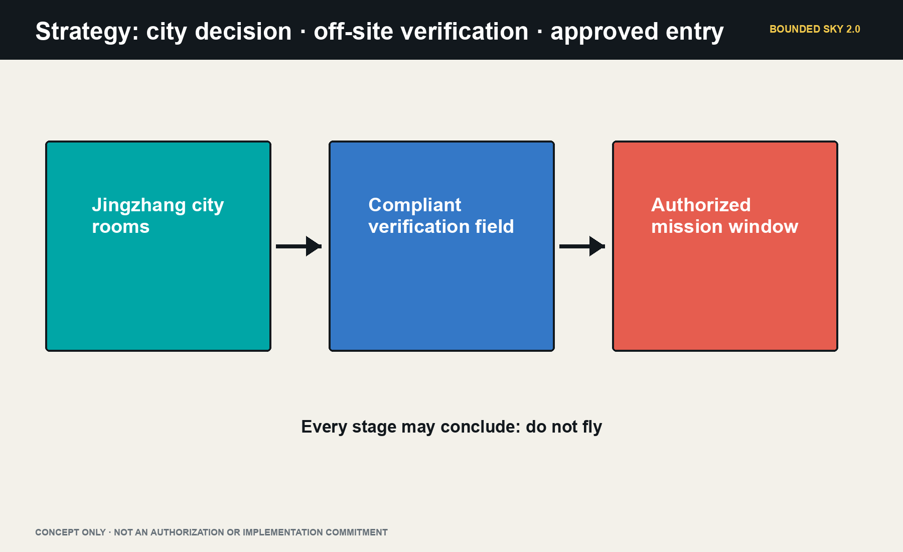
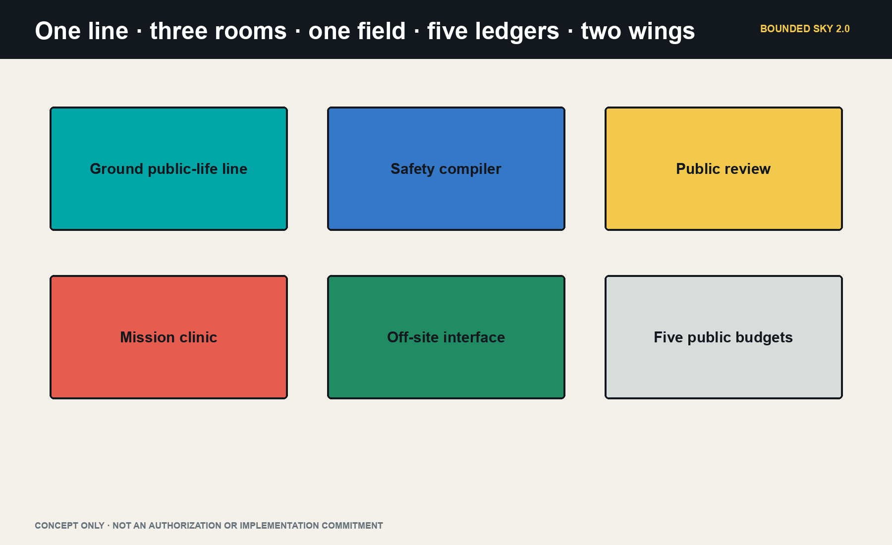
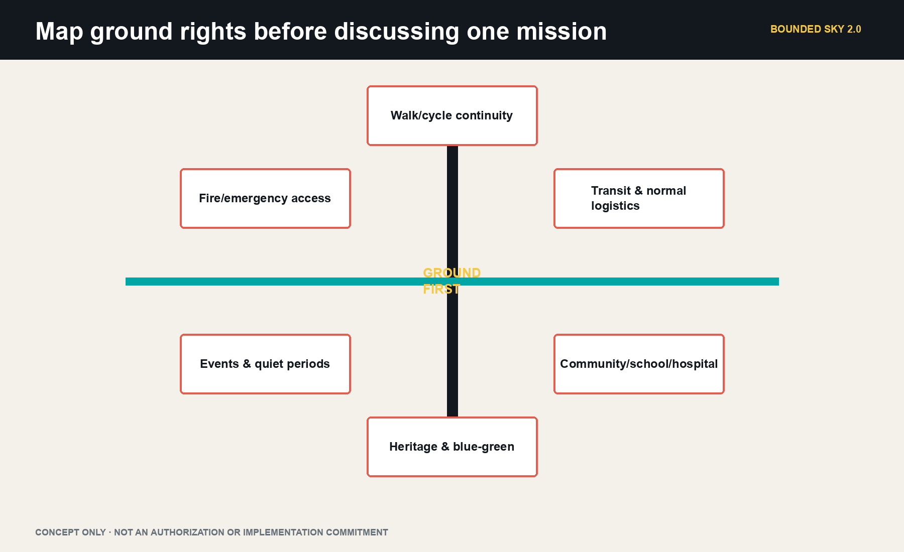

BOUNDED SKY: A Low-Altitude Public Protocol for Centennial Jingzhang
Reframes Jingzhang as verification infrastructure for public low-altitude services under Beijing's 2026 UAS controls: city-based digital governance and public review, compliant off-site flight verification, and individually authorized mission windows.
BOUNDED SKY: A Low-Altitude Public Protocol for Centennial Jingzhang
Urban sky is not an empty page for efficiency. Every flight spends safety, quiet, energy, ground occupation, and public time. Those costs should enter a public ledger before a city asks how far a low-altitude economy can fly.
This is not an airway, depot, or flight-show proposal. It is verification infrastructure for public low-altitude services under Beijing's current control regime. Since 1 May 2026, all outdoor UAS activity in Beijing requires application and approval, while UAS and core-component storage within the Sixth Ring is generally prohibited. The three Jingzhang key areas therefore default to no aircraft storage, no routine nest, and no park airway. They host digital twins, mission diagnosis, public review, rule replay, and responsibility display. Aircraft custody, operator training, operating-identification tests, and controlled flight validation connect to Haidian Airport or another separately confirmed compliant setting. Only a documented emergency, fire, medical, ecological, or maintenance need may progress toward one bounded, separately authorized mission window Source Source.
The boundary is first legal, then civic, then spatial. The Agent does not approve, operate, or scale a service. It compiles a real need into evidence gaps, ground counterfactuals, candidate actions, and stop conditions so responsible humans can decide whether the task is worth flying, can lawfully fly, and has an accountable recovery path.

Core Concept and Mechanism: The Low-Altitude Budget Compiler
The compiler turns a request into a reviewable urban action. Inputs include mission owner, beneficiary, urgency, ground alternative, time window, operator, and failure cost. Constraints include Beijing approval, special safeguards, UOM and operating identification, weather and communications, privacy, acoustics, ecology, and ground separation. Five ledgers record safety, quiet/ecology, privacy/data, energy/carbon, and ground public space. Outputs are limited to reject, desk simulation, off-site validation, hold for evidence, authorized mission window, or abort to ground Spatial data.
The system has three responsibility segments. Jingzhang's city rooms diagnose demand, run digital twins, and host public review. A compliant verification field handles custody, training, operating identification, and controlled failure tests. An authorized mission window contains one real public task. There is no automatic progression: every segment may conclude that not flying is the correct outcome Spatial data Depth.
Design Basis and Source List
The proposal first follows the official brief: three nested scopes, three key areas, urban renewal, mobility and municipal systems, AI scenarios, and public space. The Agent taskbook adds identity, comparative cases, scenario cards, cultural narrative, pilgrimage landmarks, and long-term operation Source Source. Public material does not establish real flight corridors, building heights, property rights, local noise or weather baselines, communications coverage, or operating permission. All operational figures are therefore unknown or explicitly synthetic.
The policy chain has four levels. National regulation establishes registration, flight application, safety responsibility, emergency response, cybersecurity, and noise control. CAAC's UOM and 2026 operating-identification rules establish visibility and traceability. Beijing's 2026 regulation adds full-city control and Sixth-Ring storage constraints. Beijing's low-altitude action plan gives Haidian a role in regulatory/service platforms, digital base maps, testing, and demonstrations rather than routine central-city logistics or passenger service. Policy support does not equal project authorization Source Source Source.
Published Haidian practice supports a narrower demand set: high-rise fire governance, flood preparation, forest-fire patrol, controlled research validation, and firefighter operator training. Jingzhang Phase II also serves dense public life, with nearly 70 communities, about 450,000 residents, more than ten universities, and more than forty research institutes. The heritage park's ecological, cultural, historical-display, recreation, and free-access roles remain primary Source Source Source.
The overall boundary and all three key-area polygons are provisional repository geometry. They support topology, visualization, and repeatable calculations only; they are not official redlines, cadastral evidence, precise area, or an aviation plan Spatial data. Official polygons, buildings, sensitive receptors, weather, acoustics, communication, and authorization data must trigger a full regeneration of geometry, metrics, simulation, figures, HTML, and PDFs.

Three-Level Scope Framework
One chain connects all three scales: real need, ground counterfactual, verification evidence, human responsibility, and exit decision. The 43.6 km2 coordinated scope organizes technical output, compliant verification, and regional method exchange. The 11.4 km2 overall-design scope protects ground rights and hosts the digital base map, mission ledger, and public review. The 368.4 ha key-area scope hosts three city rooms: safety compilation, public deliberation, and mission diagnosis. None creates a route Depth.
The five public budgets are safety risk, quiet/ecology, privacy/data, energy/carbon, and ground public space. Current 0-100 values are synthetic test tokens, not decibels, probabilities, emissions, legal data volumes, or statutory capacity. Budgets cannot purchase a hard gate: missing approval, operator, identification, weather, communications, separation, privacy, or human command means rejection or return to desk study Metric.
The spatial shorthand is one ground line, three rooms, one field, five ledgers, and two wings. The ground line protects continuous public life in the heritage park. Zhongzhiyuan hosts safety compilation, AI Origin hosts public review, Dazhongsi hosts mission diagnosis, and a separately compliant field hosts aircraft verification. The east wing links research review; the west wing links communities and public services Spatial data.

Coordinated Research Area: Industry and Future City Research
BOUNDED SKY has three positions: a public verification belt for world-class AI industry, a rule laboratory joining low-altitude systems to urban planning, and a future-city model that people can understand and stop. Its five functions are verification, transfer, enterprise service, talent life, and public culture. Zhongzhiyuan emphasizes full-stack safety research, AI Origin emphasizes university transfer and civic negotiation, and Dazhongsi emphasizes complex urban service and international communication Source Standard.
The ecosystem is defined by six accountable interfaces rather than a list of drone companies: vehicle and sensing providers submit bounded capability; universities test algorithms, noise, and human factors; planners define ground rights; operators provide authorization and fallback material; community representatives review quiet time and public budgets; independent auditors preserve incidents, complaints, and recovery. Regional links are proposed as exchange interfaces, not claimed partnerships: method exchange with Future Science City, instrument scenarios with Huairou, manufacturing and maintenance learning with the Economic-Technological Development Area, and locally re-authorized rule templates across Beijing-Tianjin-Hebei.
The Agent is necessary because negotiation is continuous. Weather, budget balance, requests, complaints, equipment state, and human instructions change faster than a static plan. The Agent produces an explainable candidate schedule, records why a task was refused, and recomputes the complete package when policy or geometry changes. Humans retain budget setting, sensitive-area confirmation, emergency release, operation, approval, and final veto Spatial data.
Global Case Comparison and Full-Stack Ecosystem
To keep “world-class ecosystem” from becoming a company list, the package compares six public cases through mechanisms only: Kendall Square for compact interfaces among universities, firms and public space; 22@Barcelona for renewal and knowledge-industry mix; King's Cross Knowledge Quarter for cultural, research and public-realm networks; Paris-Saclay for regional research collaboration; Station F for shared platforms and staged founder support; and Toronto Waterfront for public-realm-first civic technology scrutiny. Transferable mechanisms, limits and source status are recorded in visual/assets/ecosystem-cases.json. They are background-only and do not support local investment, output, business-attraction or policy claims Source Spatial data.
The “one line, three rooms, one field, five ledgers, two wings” frame maps to eight full-stack elements. Land remains reversible ground rights; space is the three city rooms and an off-site verification interface; industry links controls, sensing, acoustics, planning, operation, and audit; funding is a lifecycle-cost and insurance question; talent includes researchers, operators, maintainers, community reviewers, and accessibility workers; compute is auditable and edge-minimized; data is task-essential; and scenarios comprise twelve mission cards plus four validation families Depth Spatial data.

Overall Design Area: Urban Renewal and Regulatory-Plan-Level Urban Design
The overall design starts with a ground-priority map, not an airway. Continuous green and public space, schools, hospitals, communities, transit interchange, crowd periods, fire access, and maintenance routes form negative space. A task can enter a formal application discussion only after those rights, an equivalent ground service, and a clear public necessity are documented Spatial data Depth.
The plan draws four negative spaces rather than a corridor: crowded events, sensitive receptors, heritage/ecological quiet space, and transport/emergency paths. Indoor-first and reversible interventions host digital display, staffed service, acoustic experiments, and data audit. No empty-looking roof is presumed usable, and no permanent aircraft depot, charging room, nest, or routine launch facility is proposed Source.
Urban space is changed by the protocol at ground level: non-app explanations and appeals, staffed transfer, removable status elements, and edge processing that exports only task-essential event summaries. If the ordinary route, human fallback, or quiet boundary cannot be maintained, the aerial service stops. The right to exit is therefore an urban-design condition, not a software disclaimer Spatial data.
Detailed Design of Key Areas
The Zhongzhiyuan Safety Compiler Room links full-stack R&D with governance. A mission-schema workshop, urban-canyon digital twin, operating-identification bench, failure-injection theatre, and professional sign-off room turn algorithms, controls, communications, acoustics, insurance, and emergency procedures into one evidence packet. It stores no aircraft and never converts indoor R&D into presumed outdoor permission Spatial data.
The AI Origin Public Review Room links universities and civic rule-making. An acoustic room, minimum-field-of-view demonstrator, non-app service desk, fairness replay table, and appeal wall let residents, students, disabled people, carers, and frontline workers test necessity, burden, data minimization, and ground alternatives. A rule freezes when a material objection cannot be remedied Source Spatial data.
The Dazhongsi City Mission Clinic is not a passenger or routine-delivery hub. Fire, medical, emergency, parks, heritage, and maintenance teams submit a beneficiary, urgency, ground baseline, time window, failure cost, and accountable owner. The Agent compares ground-only, low-altitude-assisted, and no-action options. Only a mission whose evidence and public value outperform the ground counterfactual is recommended for off-site validation Spatial data.
The three rooms connect methodically to a separately compliant verification setting. Published Haidian Airport practice documents research validation, payload development, controlled patrol, and firefighter training, but this proposal claims neither partnership nor authorization. What leaves Jingzhang is an experimental evidence contract, not a commercial flight order Source.
The three landmarks are carriers for a responsibility-replay honor layer and a public-space component library. Only a public-interest task with a versioned replay, published reason, acknowledged limitation and named human sign-off can enter the honor layer. Status signs, staffed desks, budget ticks, quiet edges and fallback markers are removable, maintainable, non-blocking and available on paper or through staffed explanation. The landmark display layers, honor rules and component catalogue are recorded in visual/assets/landmark-component-library.json Spatial data.

AI Innovation Ecosystem, Personas, and AI+ Scenarios
Seven role-based personas shape governance rather than marketing: emergency/fire command; medical teams; parks, heritage, and municipal maintainers; accountable operators; research developers; disabled people, carers, and non-smartphone users; and residents, students, and visitors. These roles do not create personal behavioral profiles Source Depth.
Twelve cards comprise six public missions, four capability tests, and two negative tests: disaster communications, high-rise fire reconnaissance, urgent medical samples or supplies, flood mapping, green-space fire-risk patrol, heritage/municipal inspection; operating identification, urban-canyon links and takeover, acoustic/human-factors validation, network-loss recovery; and routine food/advertising plus passenger/park-entertainment requests that must be rejected. Each card declares a city-room role, verification field, mission window, ground counterfactual, minimum evidence, success measure, and stop_if Spatial data Metric.
Four industrial validation families test operating identification and UOM interfaces, communications and human takeover under urban obstruction, task-level acoustics and group differences, and privacy minimization with purpose lock and deletion. The Agent returns desk study, off-site validation, hold for evidence, or reject. It never promotes simulation into flight Source Spatial data.

This is an AI urban-planning loop rather than an abstract algorithm demo. Inputs come from provisional GeoJSON, a task schema, weather and acoustic placeholders, and human instructions. The algorithm performs constraint solving, conflict scheduling, bias comparison, and versioned recalculation. Beneficiaries include emergency teams, maintainers, researchers, disabled people, residents, students, visitors, and enterprises. Human review decides authorization, privacy, emergency action, and final veto; each result must return to a concrete transport, public-space, community-governance, and industry interface before the next test phase Spatial data Metric.
Land Use, Building Scale, and Retain-Renovate-Demolish Strategy
The four provisional land-use groups remain AI research, green and open space, industry and commerce, and community service. The protocol adds conditions rather than inventing a new statutory use: green space prioritizes quiet and ecology; community space prioritizes privacy and equivalent service; research space may study bounded testing; commercial space requires proven ground access and handover. Topology is recomputable, while statutory classification and exact scale await official material Spatial data Standard.
Building action has four levels: retain, light retrofit, removable prototype, and new-build pending. Light retrofit means status signs, staffed desks, removable separation, and edge-computing interfaces. Removable prototypes support closed studies and do not create permanent stations. New launch, power, or communications facilities remain pending structure, fire, electromagnetic, acoustic, landscape, ownership, and funding review. The submitted building footprint is conceptual, not a roof-load or demolition survey Spatial data Metric.
Height, floor-area ratio, roof form, and development intensity are not guessed. Equipment should not obscure railway heritage, public interfaces should not become private advertising, status lighting should avoid disturbance, and every pilot element should be restorable. If professional review removes a node, the wider protocol still works. The ability to do less is a central implementation discipline.
Transport, Rail, Municipal Infrastructure, and Public Services
Walking, cycling, rail, and ordinary logistics always precede aerial service. The continuous heritage-park route cannot be occupied by launch or queuing. At Dazhongsi and other interchanges, four-quadrant walking, bicycle parking, and staffed handover come first. Every schedule checks that an equivalent ground path exists; if ground transfer creates a new accessibility or crowd risk, the request goes to human coordination rather than shifting harm to the street Spatial data Depth.
Municipal interfaces include isolatable power, charging safety, redundant communication, remote identification, weather and acoustic observation, emergency landing, and fire access. Admission requires maintenance, spares, insurance, staffing, and removal resources for a complete cycle. Energy values in the simulation are task-level test budgets; they are not measured consumption or a carbon claim Metric.
Public service has two doors. A digital door submits structured requests; a staffed door explains, assists, hears appeals, and handles emergencies. The Agent proposes schedules and impact statements. Named humans remain responsible for operation, permission, incident response, privacy, and public-budget change. A network loss freezes new work, preserves state, transfers control, and restores ground service; failure of that chain keeps the system closed Spatial data.
Blue-Green Network, Public Space, and Urban Character
Blue-green space is a protected subject, not an airway backdrop. Rivers, continuous green space, and the heritage park carry ecology, exercise, rest, and memory. Quiet edges, no continuous personal tracking, pending bird and seasonal surveys, and event-period pauses translate that priority into design rules. Green and public-space ratios come from provisional geometry and serve internal consistency only Spatial data Metric.
Three conceptual landmarks form a public AI pilgrimage route. A northern Public Stop Bell shows who can pause and restore a system. A central Sky Ledger Wall replays anonymized budgets, refusals, and complaints. A southern Ground-Air Handover Gate explains responsibility across rail, walking, ordinary logistics, and low-altitude tasks. They require landscape, accessibility, acoustic, and operational design and are not approved structures Metric.
The identity is a Jingzhang line held by a bracket. Black marks ground rights, cyan marks an admitted task, yellow marks scarce budget, and coral is reserved for stop or risk. Chinese and English names sit together; state never depends on color alone. The intended character is not a sky full of devices, but rules that are visible while technical burden recedes Spatial data.
The cultural storyline has three chapters: the railway brings distance to Haidian; Zhongguancun turns knowledge into public collaboration; and AI lets a city pause and replay. The heritage-park ground line carries chapter one, east-west negotiation nodes carry chapter two, and the three responsibility landmarks carry chapter three. Signage uses a ground line, numbered budget tick, stop mark, handover gate and replay timestamp, with Chinese, English, non-colour cues and staffed explanation. International copy stays explicit about concept status: no route, flight, permit or built landmark is claimed Spatial data Depth.

Renewal Projects, Implementation Policy, and Phasing
Nine first packages are proposed: evidence baseline, boundary recalculation, three budget cells, request schema, staffed interface, status and identity system, twelve stress tests, complaint replay, and annual audit. Each package names responsible roles, inputs, stop conditions, recovery, and evidence. Missing authorization or responsibility leaves it in research status; an event date cannot force release Spatial data Depth.
Phase P0 covers evidence, regulation, civic questions, and offline simulation. P1 studies equipment and human fallback in one closed interface. P2 may consider one authorized small pilot inside one cell. P3 only studies cross-cell coordination after independent evaluation. Every phase may expand, narrow, or exit. Official geometry, local acoustic and weather baselines, airspace and operating permission, insurance, fire review, and public deliberation are hard gates [assumption:A-AIRSPACE-AUTH-001] Depth.
A long-term Bounded Sky Week is proposed as a global open challenge. Teams run the same public synthetic tasks and compare who meets needs with less public cost. Residents and professionals review refusals, bias, and recovery rather than speed alone. The annual ledger becomes a transferable rule library that another city can retest with local budgets and sensitive uses. The event is not approved; host, place, date, and funding remain human decisions.
The operating system runs as a quarterly cycle of rule calibration, closed validation, public replay and responsibility ledger. Developers enter through the public task schema and offline replay pack; operators add responsibility, insurance and recovery material; communities review rules and request replays; professional teams decide whether to continue only after official data and permission gates. The activity brand is a removable communication and audit format, not a registered mark or government event. Every phase retains expand, narrow and exit decisions, and staffed and ordinary logistics must continue when low-altitude service is closed. Follow-up pathways for developers, operators, communities and institutions are recorded in visual/assets/operations-program.json Spatial data Depth.
Metrics, Area Recalculation, and Compliance Matrix
Known spatial values are limited to values recomputable from submitted geometry: provisional site area, building footprint, green ratio, public-space ratio, and three key areas. They are not official area or regulatory control Metric Metric. Real altitude, route length, noise, weather availability, flights, incident rate, public acceptance, and operating cost remain unknown until official and field evidence exists.
The simulation contains twelve structured tasks. Every record passes schema and leaves a complete audit trail. School-period, noise-exceedance, network-loss, and missing-authority tasks achieve the expected reject or fallback branch. A 1.0 simulation success rate therefore means the control logic behaved as designed, not that twelve flights succeeded Metric Metric. A synthetic first-come counterfactual admits more work but incurs four budget violations; the bounded model records none. This is an algorithm stress test, not proof of real-world superiority.
The compliance matrix covers brief items 1.3, 1.4, 1.5 and agent.1-agent.6. The standards matrix covers urban design, regulatory-plan depth, land use, accessibility, age inclusion, and data boundaries. Any updated input triggers version locking, GeoJSON recutting, metric recalculation, simulation replay, bilingual figure regeneration, PDF/HTML generation, and a new full self-check Depth.

Technical Implementation Volume: From Concept Proposal to a Design That Can Be Deepened
1. Benchmarking Mature City Plans and Adapting Them to Jingzhang
This volume tests the proposal against the implementation discipline of the Beijing Master Plan, the Haidian District Plan, Beijing's urban-renewal plan, Shenzhen's low-altitude infrastructure programme, and Shanghai's low-altitude economy action plan. The comparison concerns how each document turns policy into space, facilities, projects, accountable bodies, timing, indicators, and maintenance. It does not transfer another city's route count, vertiport quantity, market target, or commercial model to central Beijing Source Source Source Source Source.
Beijing contributes the governing discipline: capital-city safety, carrying capacity, reduction-oriented development, heritage protection, one-plan coordination, and continuous evaluation precede new construction. Shenzhen contributes a useful decomposition of take-off and landing, communications, navigation, surveillance, meteorology, testing, computing, and safety-control infrastructure, with named lead and supporting bodies. Shanghai contributes task packages that connect enterprise capacity, testing, infrastructure, scenarios, and safeguards. Jingzhang adopts those methods but reverses the usual emphasis: it builds demand screening and public accountability inside the city while placing any real-flight validation behind a separate off-site approval interface.
Six adaptation rules are fixed. Public missions, not aircraft or vendors, are the entry point. Flight, planning, construction, data, and procurement approvals remain separate. The three city rooms perform decision, simulation, explanation, and audit only. Verification fields remain external resources selected case by case. Every mission has a ground counterfactual and a no-action option. All spatial conclusions must be recalculated when official geometry, surveys, or regulations replace provisional inputs.
2. Planning Contract, Deliverable Depth, and Limits of Use
This document is a technical implementation recommendation at concept urban-design stage. It is not statutory planning, a regulatory-plan amendment, construction design, a government investment proposal, or a flight application. It can guide room screening, departmental requirement interviews, evidence design, testing, and future scopes of work. It cannot authorize land acquisition, construction tendering, equipment purchase, route publication, data collection, or operation.
Five deliverable levels define completeness. L0 is the evidence ledger; L1 is the admission and refusal rule set; L2 is spatial and facility guidance; L3 is the project, cost, responsibility, procurement, and acceptance package; L4 is operation, review, suspension, conversion, and exit. A usable proposal must be judgment-ready, data-replaceable, project-decomposable, and responsibility-traceable across all five levels.
3. Existing-Condition Diagnosis
The approximately nine-kilometre Phase II area overlaps dense residential, education, research, commercial, heritage, park, rail, and road activity. It is not a blank test ground. Schools, hospitals, homes, quiet recreation, heritage views, tree canopy, emergency access, and ordinary mobility are receptors to protect, not unused space available for flight Source.
Fire, flood, medical, parks, heritage, and municipal services already have dispatch, vehicles, fixed sensors, staff, work orders, and recovery procedures. A low-altitude method is admissible only where a measured time, visibility, or personnel-risk gap remains after the existing ground process is documented. If the ground service already meets its objective, the correct project output is no build and no flight.
4. Data Baseline and Survey Programme
Evidence is graded A to D. Current law, approved plans, standards, and official notices support principles and procedures but not a project permit. Verified public practice supports demand context but not precise local extrapolation. Organizer-supplied provisional geometry supports topology and workflow tests only. Synthetic simulation supports rule testing only. Every conclusion inherits the lowest confidence of its inputs.
Before deepening, ten surveys are required: official boundaries and control lines; building, road, open-space, plant-room, roof, and ownership surveys; sensitive-receptor inventory; acoustic and activity-period baselines; current service workflows; communications, positioning, weather, power, cybersecurity, and storage conditions; written regulator questions; public and frontline-worker interviews; structural, fire, accessibility, MEP, and evacuation checks; and lifecycle market-price baselines. Missing survey packages close the affected decision rather than inviting invented precision.
5. Objective Hierarchy
Objectives are ordered as public value first, provable construction value second, and industrial value third. Public value means a net improvement in emergency response, worker safety, privacy, quiet, equity, and public space. Construction value means reusable spatial, procedural, data, testing, and organizational assets. Industrial value is considered only when it serves both preceding layers.
The first 6 to 12 months should produce a confirmed urban-task library, a refusal-capable audit system, and a standard interface to external compliant testing. The 12 to 24 month period may run desk exercises and off-site verification. Later stages may continue selected missions, remain indoor research, or close the low-altitude strand and convert the rooms to broader urban-safety governance.
6. Spatial Delivery Framework
The framework is one ground public spine, three city rooms, and one external-field interface. The spine follows existing park, walking, community, research, and municipal systems. Zhongzhiyuan compiles safety evidence; AI Origin supports public review; Dazhongsi diagnoses tasks. The field interface is a procedure for qualification, custody, transport, staffing, test approval, data return, and incident responsibility, not a fourth promised site.
Site selection follows exclusion first, reuse second, reversibility third. Unclear ownership, failed structure or fire conditions, inaccessible premises, sensitive adjacencies, heritage harm, or major demolition excludes a candidate. Each room separates a public front zone, collaborative working zone, and controlled back zone so public displays cannot access production data. No specific property is committed at this stage.
7. Zhongzhiyuan Safety Compiler Room
This room turns a departmental problem into a reviewable mission evidence packet. Its minimum functions are requirement intake, rule and source management, digital-twin testing, failure injection, human-factors review, decision recording, and secure administration. A concept area band of 650-950 square metres supports later property comparison only. No aircraft, battery fleet, fuel, routine charging, or operational command is stored here.
8. AI Origin Public Review Room
This room lets residents, students, disabled people, carers, frontline workers, and professionals inspect necessity, privacy, noise, fairness, ground alternatives, complaints, and exit. It needs staffed non-app service, accessible participation, acoustic demonstration, minimum-field-of-view review, replay, and a controlled archive. A concept area band of 450-700 square metres is conditional on ownership, fire, accessibility, and operating review.
9. Dazhongsi City Mission Clinic
The clinic receives fire, emergency, medical, parks, heritage, and municipal problems in a common schema. It compares ground-only, assisted, and no-action options; shows the reason for admission or refusal; and prepares evidence for off-site testing. It is not a passenger terminal, delivery depot, hangar, or take-off point. A concept area band of 550-850 square metres remains a functional brief, not a lease or construction commitment.
10. External Compliant Verification Interface
Real-flight testing may occur only at a separately qualified and approved setting. Selection checks legal status, airspace conditions, operator and staff qualifications, custody, operating identification, weather, emergency capacity, communications, data handling, insurance, transport, and community impact. Published Haidian Airport practice is evidence that controlled research and training capacity can exist; it is neither a partnership claim nor automatic authorization Source.
11. Facility Hierarchy and Minimum Provision
Facilities are divided into city-room fit-out, shared digital infrastructure, external verification resources, and mission-specific temporary resources. City-room fit-out prioritizes accessibility, fire safety, acoustic separation, ordinary meeting use, and reversible partitions. Shared digital infrastructure provides identity, rule, mission, evidence, decision, incident, and public-mirror services. External aviation assets remain under the operator or field. Temporary mission assets are mobilized only after approval and removed after closure.
12. Digital Architecture
The digital system has six layers: source and version registry; spatial and sensitive-receptor baseline; mission, ground-counterfactual, and beneficiary objects; rule engine and five-budget assessment; simulation, failure injection, and replay; and human decision, public explanation, and archive. Every output carries source versions, assumptions, rule versions, model version, human sign-off, and expiry. The system recommends; it never issues a legal authorization.
13. Cybersecurity, Data Governance, and Privacy
Data collection follows purpose limitation and minimization. The default record stores task class, place and time band, decision reason, budget result, accountable role, and retention rule, not continuous faces or trajectories. Public and production networks are separated; least privilege, multi-factor authentication, encryption, immutable audit, backup recovery, vulnerability handling, and deletion verification are acceptance items. Model prompts, outputs, overrides, and versions are logged without exposing sensitive operational content.
14. Six Hard Gates
The gates are legal authority, public necessity, spatial and temporal suitability, operator and technical readiness, data and cybersecurity compliance, and ground recovery. Failure of any gate yields reject, hold for evidence, or desk study. Budgets, urgency, sponsorship, or technical novelty cannot purchase passage through a hard gate. Approval expiry, equipment mismatch, weather deterioration, lost communication, positioning drift, or loss of ground service re-closes the gate.
15. Disaster-Communication Mission Procedure
The emergency authority defines the communication gap, beneficiaries, duration, ground assets, and command chain. Desk work maps coverage and tests no-action, vehicle, portable-base-station, and low-altitude options. Off-site validation measures deployment, link availability, handover, endurance, safe landing, and data logging. Any real mission requires an incident-specific decision; aviation support supplements rather than replaces public communication and ground command.
16. High-Rise Fire Reconnaissance Procedure
Fire command owns the requirement and tactics. The evidence packet defines building type, facade and thermal questions, smoke and heat conditions, obstructions, separation, operator location, image scope, retention, and abort criteria. Training uses digital and off-site mock conditions. A live incident never waits for the aircraft, and loss of the link immediately returns priority to established firefighting methods.
17. Urgent Medical Sample and Supply Procedure
The health authority and medical institutions first measure existing door-to-door time, temperature control, chain of custody, receiving windows, clinical value, and road contingency. Validation covers packaging, identification, transfer, temperature logging, delay, misdelivery, and ground recovery. Patient identity is minimized. No routine delivery service is inferred from an exceptional clinical need.
18. Flood and Waterlogging Mapping Procedure
Flood command identifies locations where fixed sensors, patrols, vehicles, or public reports leave a material information gap. Desk exercises compare data latency and decision value. Off-site tests cover rain, wind, poor visibility, communications, map accuracy, staff interpretation, and safe recovery. Outputs support command judgment and never replace road closure, drainage, rescue, or field verification.
19. Green-Space Fire-Risk Patrol Procedure
Parks and fire authorities define season, vegetation, blind areas, patrol baseline, wildlife and quiet constraints, and response workflow. Low-altitude sensing is tested only where it lowers worker exposure or materially improves detection. Breeding seasons, crowded periods, privacy risk, high wind, and inadequate response capacity close the task. Detection without a funded ground response has no public value.
20. Heritage and Municipal Inspection Procedure
The asset owner defines the defect, inspection interval, access risk, evidence resolution, and conservation restrictions. Close-range imagery is minimized to the asset and compared with manual, fixed-sensor, and elevated-platform methods. Heritage authenticity, public access, worker safety, and data rights govern the test. Outputs remain inspection leads until a qualified professional confirms condition and repair.
21. Four Validation Families and Two Negative Tests
Validation covers operating identification and UOM interfaces; obstructed communications and human takeover; task-level acoustics and human factors; and privacy minimization, purpose lock, and deletion. Negative tests submit routine food or advertising delivery and passenger, sightseeing, or park-entertainment requests. The system must refuse them consistently despite payment, brand, event, or schedule pressure.
22. Measuring the Five Public Budgets
Safety records hazards, exposure, severity, controls, residual risk, and recovery. Quiet and ecology record receptors, background, time band, event characteristics, cumulative exposure, and seasonal conditions. Privacy records view, fields, identifiability, purpose, access, retention, and deletion. Energy records full task-chain consumption rather than flight alone. Ground-space records occupation, queueing, barriers, accessibility, fire access, and restoration. Synthetic 0-100 tokens remain test variables until professional baselines exist.
23. Failure, Safe State, and Ground Recovery
Every mission defines detectable failures, safe state, human command, notification, evidence preservation, and ground continuity. Loss of network freezes new decisions; lost communication or positioning follows the approved contingency; energy or payload anomalies trigger landing or recovery; identity mismatch prevents start. Recovery is complete only when the public service continues, the site is safe, data is controlled, affected parties are notified, and the event is reviewed.
24. Project Library and Work Breakdown
The project library separates evidence baseline, room candidate studies, shared digital governance, public participation, off-site validation framework, mission-specific tests, annual audit, and exit reserve. Each project has an owner, need, scope, exclusions, inputs, outputs, dependencies, approval route, procurement form, schedule, cost class, acceptance evidence, operating owner, and stop condition. Projects cannot hide uncertain approvals or unfunded operation inside a single platform label.
25. Investment Method and Cost Boundary
Costs are planning scenarios, not tender controls. They include survey and design, reversible fit-out, digital development, security, external test services, staff, training, insurance, maintenance, licences, calibration, ordinary ground fallback, replacement, restoration, data migration, and disposal. Three scenarios - minimum governance, standard shared network, and expanded public-service verification - are compared by lifecycle cost and avoided harm, not aircraft quantity.
26. Procurement and Vendor Neutrality
Procurement begins with public problems, measurable outputs, open interfaces, data portability, and exit. Room fit-out, digital governance, professional review, external validation, and mission assets remain separable packages. Demonstrations and trials do not create sole-source entitlement. Contracts require source and model documentation, audit export, security disclosure, service continuity, migration assistance, spare and maintenance terms, and secure deletion.
27. Governance and Responsibility Matrix
Demand departments own necessity and service outcomes. The planning and renewal team owns spatial coordination. Property owners own premises and asset duties. Regulators retain statutory authority. Operators own aviation safety and approved execution. Data controllers own lawful processing. Professional reviewers own discipline-specific opinions. The governance committee integrates evidence and stops unresolved work; public representatives review impacts without being assigned technical liability; the Agent remains an advisory tool.
28. Phasing and Stage Gates
P0 freezes evidence, questions, and baseline; P1 establishes city-room and digital prototypes; P2 runs desk exercises and off-site tests; P3 may consider a narrowly approved mission; P4 evaluates whether to continue, narrow, convert, or exit. Each transition requires closed blocking defects, named staff, funds, approval pathway, ground fallback, public material, and an exit reserve. Calendar pressure cannot waive a gate.
29. Annual Operations
The annual cycle combines quarterly rule calibration, controlled validation, public replay, and responsibility review. Monthly work covers source updates, task intake, security maintenance, complaints, and staff training. Special periods trigger stricter closure. An annual report records admissions, refusals, ground alternatives, incidents, complaints, costs, data deletion, asset condition, supplier dependence, and exit recommendations without publishing sensitive operations.
30. Performance and Evaluation
Performance measures decision quality rather than flight volume: percentage of requests with a complete ground comparison; correct refusal of negative requests; evidence completeness; recovery drill pass rate; unresolved severe defects; complaint response and remedy; data deletion verification; reuse of existing space; lifecycle-cost variance; and proportion of tasks narrowed or stopped after evidence. Targets are set only after a measured baseline and named owner exist.
31. Quality Management and Design Review
Quality control uses source review, requirement review, interdisciplinary design review, independent safety and security review, user testing, and release review. Every major claim is traced to an input, calculation, assumption, professional judgment, and affected deliverable. Drawings, prose, structured data, software, and public explanations are checked together. A polished board cannot cure an unsupported decision.
32. Exit, Conversion, and Residual Responsibility
Exit triggers include legal change, expired approval, unacceptable safety or privacy risk, ground service failure, repeated complaints without remedy, unsustainable cost, supplier lock-in, or failure to demonstrate net public benefit. Reversible rooms convert to community meeting, safety training, planning participation, or digital-governance use. Contracts specify asset return, data export and deletion, account closure, source escrow where needed, restoration, incident retention, and continuing responsibility.
33. First Twelve-Month Action List
Months 1-2 establish governance, source and regulation versions, official-data requests, task interview templates, and public statements of what the project is not. Months 3-4 document ground baselines and screen room candidates. Months 5-6 build the rule and evidence prototype. Months 7-8 run tabletop exercises and negative tests. Months 9-10 procure independent review and, if justified, prepare off-site tests. Months 11-12 publish an auditable evaluation and decide to proceed, narrow, pause, convert, or exit.
34. Appendix A: Room Schedule
Each room schedule records public, collaborative, controlled, support, circulation, and accessible-service areas; occupancy; operating hours; acoustic separation; security level; power and cooling; fire and evacuation; furniture and removable partitions; network zone; staff; shared use; and conversion state. Area bands are tested against real properties and may contract. Function can remain distributed or mobile if no compliant property exists.
35. Appendix B: Minimum Mission Evidence Packet
The packet contains mission ID and owner; public problem and beneficiary; affected groups; ground baseline and no-action outcome; location and time versions; equipment, operator, and approval identities; weather and communications evidence; five-budget forecast; data purpose and deletion; stop and recovery plan; insurance; cost; test results; human decision; public notice; actual outcome; incident and complaint record; and closure. Missing critical fields keep the task closed.
36. Appendix C: Regulator Consultation Matrix
Consultation uses controlled scenarios rather than asking whether drones can generally fly. Questions separately cover flight application, special safeguards, Sixth-Ring custody and transport, room use and construction, fire and energy, personal information and cybersecurity, sector necessity, and public procurement. Each record stores date, institution, channel, facts presented, answer, uncertainty, next confirmation, and expiry. Oral advice is a lead, not a permit.
37. Appendix D: Minimum Test Library
Every scenario tests normal baseline, ground and no-action comparisons, missing input, missing authority, expired approval, equipment mismatch, near-limit weather, degraded link, positioning drift, energy and payload anomaly, human takeover, ground recovery, and complaint. Severity S1 and S2 defects block real work. An independent person retests fixes and related regression paths; intermittent failures remain open until risk is understood.
38. Appendix E: Construction and Operating Acceptance
Spatial acceptance covers ownership, approvals, structure, fire, evacuation, accessibility, MEP, grounding, cooling, acoustics, doors, network zoning, materials, signage, and reversible removal. Digital acceptance covers object coverage, interfaces, accounts, least privilege, logs, backup restoration, vulnerabilities, offline behaviour, performance, export, deletion, and model versions. Business acceptance runs end-to-end mission and refusal exercises. Operating acceptance requires named staff, maintenance, insurance, complaint, incident, budget, and exit capacity.
39. Appendix F: Operating Ledger Dictionary
The task ledger records need, owner, beneficiaries and affected groups, ground alternative, decision, approval and expiry, place and time versions, personnel and equipment identity, weather, predicted and actual budgets, anomaly, stop, recovery, data, complaint, cost, and closure. Separate asset, rule, and incident ledgers record ownership, maintenance, source and effective dates, linked gates, notifications, root cause, corrective action, retest, and public summary.
40. Appendix G: Public-Participation Questions
Participants first receive a clear non-claim: there is no approved Jingzhang route, routine hangar, passenger or sightseeing plan, vendor commitment, or official redline in this package. Discussion then asks who benefits, why a ground method is insufficient, who bears noise, privacy, ecological, safety, cost, and space impacts, who decides, how approval and complaint work, when data are deleted, and when the project exits. Support, conditional support, opposition, insufficient information, and procedural objection are all retained with reasons.
41. Appendix H: Professional Deepening Briefs
Separate briefs are required for urban design and renewal; architecture and engineering; low-altitude safety and operation; digital, data, and cybersecurity; emergency and sector services; public participation; cost and finance; and legal compliance. Each uses the same structure: problem, scope and exclusions, authority, inputs and confidence, users and responsibility, outputs and depth, interfaces, milestones, review, acceptance, risk, intellectual property, data, operation, and exit.
42. Appendix I: Mature-Case Learning Record
Beijing provides planning restraint and implementation monitoring. Haidian provides coordination among science, ecology, culture, services, and urban governance. Beijing urban renewal provides small-scale, incremental, reversible project delivery Source. Shenzhen provides infrastructure classification and named responsibility, while its facility quantities and commercial ambitions are excluded Source. Shanghai provides coordinated industry, facility, scenario, and safeguard task packages. Together they reinforce the proposal's central judgment: the most valuable central-city low-altitude infrastructure may be stricter mission screening, evidence, recovery, and public accountability rather than more launch points.
43. Appendix J: One-Hundred-Item Pre-Delivery Review
The review uses ten groups of ten: identity and version; brief, law, plan, standard, and source; spatial layers and coordinates; industry, users, scenarios, culture, and public interest; six mission protocols; three room briefs; digital architecture; project, cost, procurement, responsibility, operation, and exit; bilingual text, HTML, figures, PDFs, fonts, and offline readability; and manifest, hashes, line endings, schemas, four self-checks, changed-file scope, and exact head. Blocking or major findings close release.
44. Appendix K: Recalculation and Change Control
Official data arrival is a controlled change. The receiving record preserves provider, file, format, coordinates, date, coverage, accuracy, licence, contact, and hash. Geometry, topology, area, receptors, room candidates, task baselines, budgets, costs, and linked decisions are compared and recalculated. Changes are classified from editorial correction through data update and project change to legal, boundary, major-risk, or public-interest change. The highest class requires a new governance decision and may suspend or withdraw work.
Deliverables form a dependency graph: Markdown is the substantive narrative; the English file is an equivalent companion; HTML is the offline reading derivative; A3 is the technical reading edition; A0 is the overview; JSON and GeoJSON are evidence; the manifest is the inventory; and self-check records one exact version. Any substantive edit triggers bilingual correspondence, rendered outputs, hash refresh, Git-normalized blob verification, and validation of the exact pushed head.
45. Appendix L: Maturity Decision
Maturity is not established by word count alone. M0 states a concept; M1 has a complete strategy; M2 can be professionally deepened; M3 can support a project decision with official inputs, confirmed need, cost, permission pathway, procurement, and acceptance; M4 has approvals, contracts, training, insurance, and recovery; M5 is proven through operations, annual evaluation, public accountability, and exit.
This proposal claims M2 and lists the inputs required for M3. It does not claim M3-M5. Different missions may remain at different levels: one can stay at desk study, another may reach off-site validation, and the city rooms may operate as a governance network without any real flight. That differentiated, reversible state is a mark of planning maturity rather than incompleteness.
Risk, Copyright, and Compliance
The highest risks are policy and airspace uncertainty, technical maturity, and implementation complexity; public acceptance, spatial rights, equity, privacy, and maintenance follow. risk.json assigns design risk levels, mitigation, and human review. High-risk scenarios stay closed until authorization, professional assessment, human takeover, insurance, public communication, and recovery resources are jointly available Spatial data Depth.
Data is minimized. The ledger stores task class, time window, budget use, decision reason, and responsible role. It excludes unrelated facial data, continuous personal trajectories, and cross-scenario profiles. People can inspect rules, object, and request replay. Unexplainable data linkage must be removed or stopped. The Agent advises; humans remain responsible for approval, enforcement, operation, incidents, sensitive information, and final public-interest judgment.
Text, structured design, figures, and layout were generated by Codex with user authorization. Official sources retain their rights. Figures derive from package GeoJSON, JSON, and original geometric elements; no news images, remote tiles, third-party trademarks, or uncleared fonts are used. Community display permission does not transfer source rights or imply official endorsement, planning approval, flight permission, engineering feasibility, or implementation.
References
1. Official prequalification announcement for the Centennial Jingzhang AI Innovation Belt Source. 2. Repository Agent taskbook, six mandatory tasks, and supplementary review dimensions Source. 3. State Council and Central Military Commission, Interim Regulations on the Flight Administration of Unmanned Aircraft, State Council Order No. 761, effective 1 January 2024 Source. 4. Repository public source registry and local professional-standard snapshots Source. 5. Provisional overall and key-area geometry, used only for concept generation and recalculation workflow Source. 6. Package simulation.json, metrics.json, and visual/assets/airspace-budget.json, recording the offline protocol and repeatable stress test.